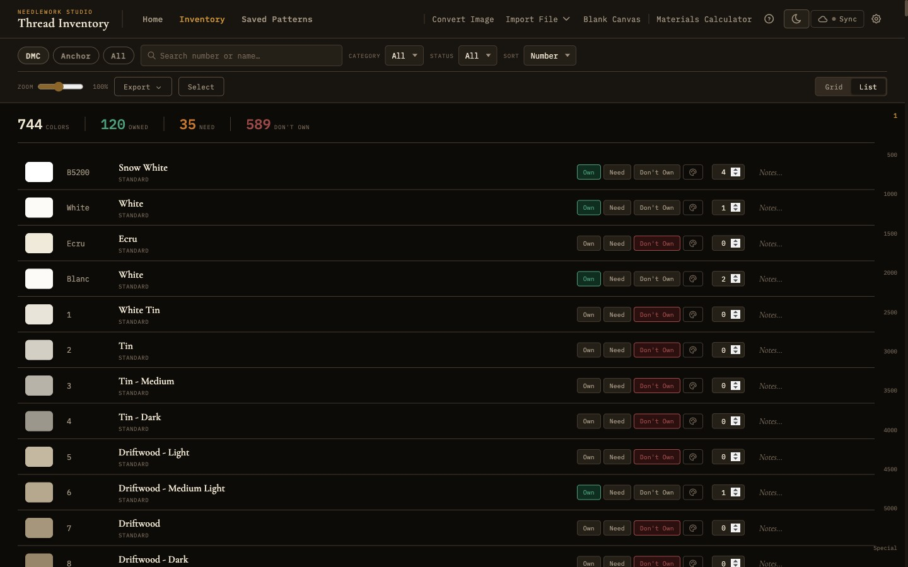
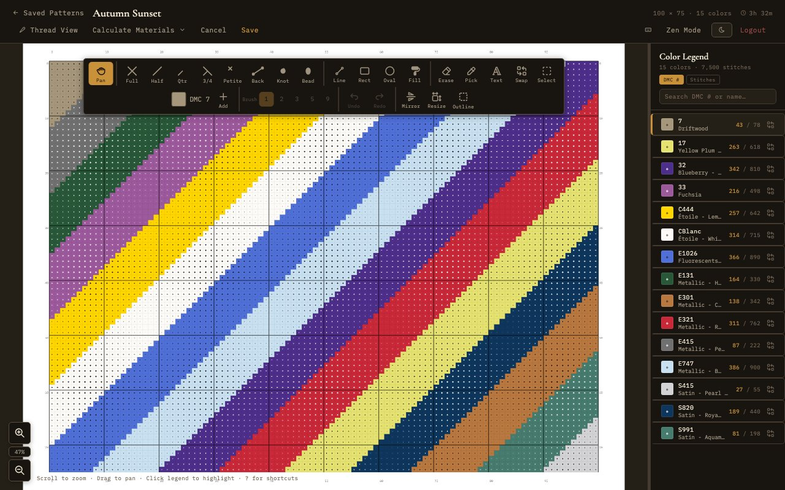

Features
Everything you need for cross-stitch, in one self-contained app.

Thread Inventory
Browse 744 DMC and 400+ Anchor threads. Search by number or name, filter by brand and category, mark ownership status, and track skein quantities.

Pattern Editor
12 tools, 8 stitch types including backstitches, French knots, and beads. Mirror modes, 50-level undo/redo, flood fill preview, row/column insert, and keyboard shortcut help.
Pattern Viewer
Chart mode with symbol overlays, thread mode with realistic rendering. Zen mode, resizable legend, per-color progress tracking, and smooth zoom.

Import & Export
Import from PDF, JSON, and OXS formats. Export to PDF with cover sheets, SVG vector charts, and standard interchange formats.

Project Management
Track pattern status and per-color completion. Saved patterns gallery with search, sort, batch actions, forking, and materials calculator.

Image Converter
Upload any photo and convert it to a cross-stitch pattern. Adjust dimensions, color count (up to 256), contrast, brightness, dithering, and crop shape before generating.